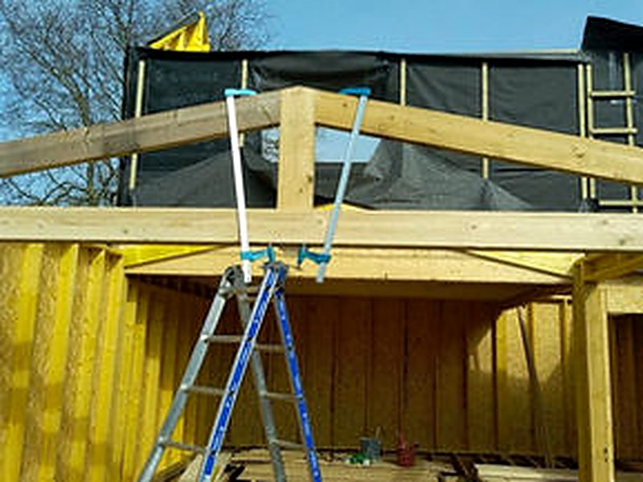

Cœur de métierCouverture
La couverture est l\'élément clé qui protège votre maison des intempéries, tout en apportant une touche esthétique à votre toit. Chez BQC, nous vous proposons des solutions de couverture adaptées à vos besoins : ardoises, zinc, aluminium et plus encore, en assurant une pose soignée et conforme aux normes en vigueur.
Demander un devis